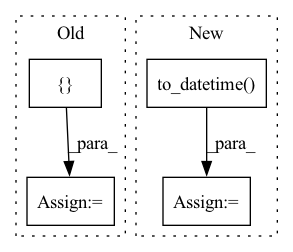

Pattern ID :36753
Before Change
// TODO m3.add_country_holidays("US")
config_normalization = configure.Normalization("auto", False, True, False)
for m in [m1, m2, m3]:
df_dict = { "df1": df1.copy(), "df2": df2.copy()}
config_normalization.init_data_params(df_dict, m.config_covar, m.regressors_config, m.events_config)
m.config_normalization = config_normalization
df_dict = m._normalize(df_dict)
dataset = m._create_dataset(df_dict, predict_mode=False)After Change
df4["A"] = np.arange(len(df4))
df4["B"] = np.arange(len(df4)) * 0.1
df4["ID"] = "df4"
df4.loc[:, "ds"] = pd.to_datetime( df4.loc[:, "ds"])
m4 = NeuralProphet(
n_lags=2,
learning_rate=LR,
)In pattern: SUPERPATTERN
Frequency: 4
Non-data size: 4
Instances Fragment ID: 104834831
Project Name: ourownstory/neural_prophet
Commit Name: 7fcf23557cb5b30885a8a07387d411c61a50a05e
Time: 2022-06-21
Author: mgheorghecr@gmail.com
File Name: tests/test_unit.py
M Class Name: AnonimousClass
N Class Name: AnonimousClass
M Method Name: test_globaltimedataset(0)
N Method Name: test_globaltimedataset(0)
M Parent Class:
N Parent Class:
M File Name: tests/test_unit.py
N File Name: tests/test_unit.py
M Start Line: 583
M End Line: 626
N Start Line: 631
N End Line: 679
Before Change
f_df = pd.read_csv(fpath, index_col="Date Time",
encoding="unicode_escape", na_values=-9999)
f_df.index = pd.DatetimeIndex(f_df.index)
df = pd.concat([ df, f_df = df.index[0]
if en is None:
en = df.index[-1]
After Change
nc_path = os.path.join(sub_dir, "data.nc")
df = xr.load_dataset(nc_path).to_dataframe()
if "Date Time" in df:
df.index = pd.to_datetime( df.pop("Date Time"))
if isinstance(st, int):
if en is None:
en = len(df) Fragment ID: 104834811
Project Name: atrcheema/dl4seq
Commit Name: 40a6dd9ce37500119adb2b855a3f287633b5fcf3
Time: 2022-06-15
Author: ather_abbas786@yahoo.com
File Name: ai4water/datasets/datasets.py
M Class Name: WeatherJena
N Class Name: WeatherJena
M Method Name: fetch(3)
N Method Name: fetch(3)
M Parent Class: Datasets
N Parent Class: Datasets
M File Name: ai4water/datasets/datasets.py
N File Name: ai4water/datasets/datasets.py
M Start Line: 528
M End Line: 572
N Start Line: 557
N End Line: 604
Before Change
m.add_future_regressor("A")
m.add_lagged_regressor("B")
config_normalization = configure.Normalization("auto", False, True, False)
df_dict = { "df1": df1.copy(), "df2": df2.copy()}
config_normalization.init_data_params(df_dict, m.config_covar, m.regressors_config, m.events_config)
m.config_normalization = config_normalization
df_dict = m._normalize(df_dict)
dataset = m._create_dataset(df_dict, predict_mode=False)After Change
m.add_lagged_regressor("B")
config_normalization = configure.Normalization("auto", False, True, False)
df_global = pd.concat((df1, df2))
df_global.loc[:, "ds"] = pd.to_datetime( df_global.loc[:, "ds"])
config_normalization.init_data_params(df_global, m.config_covar, m.regressors_config, m.events_config)
m.config_normalization = config_normalization
df_global = m._normalize(df_global)
dataset = m._create_dataset(df_global, predict_mode=False) Fragment ID: 104834817
Project Name: ourownstory/neural_prophet
Commit Name: 7fcf23557cb5b30885a8a07387d411c61a50a05e
Time: 2022-06-21
Author: mgheorghecr@gmail.com
File Name: tests/test_unit.py
M Class Name: AnonimousClass
N Class Name: AnonimousClass
M Method Name: test_loader(0)
N Method Name: test_loader(0)
M Parent Class:
N Parent Class:
M File Name: tests/test_unit.py
N File Name: tests/test_unit.py
M Start Line: 631
M End Line: 644
N Start Line: 684
N End Line: 700